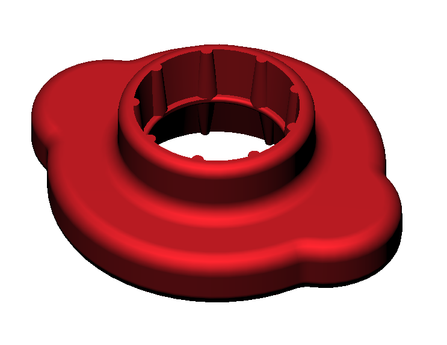

The design is double sided as we have found 2 different manufacturers in Australia
The user places the correct side on the carton and can then push down with their palm to open the carton.
A mate of mine has tetraplegia which is between para and quadraplegia. It means limited use of arms and hands
The problem addressed is this friend can push the power windows buttons down on his (adapted) Audi A4 but doesn't have the functionality to lift the front edge of the buttons and raise the windows
These caps replace the power window switches. Note, they are snap on but the initial installation requires the switch block to be removed from the door however, if they are subsequently damaged, they should be able to be snapped back on. These caps are a direct replacement and if the car is to be returned stock, the original caps snap back